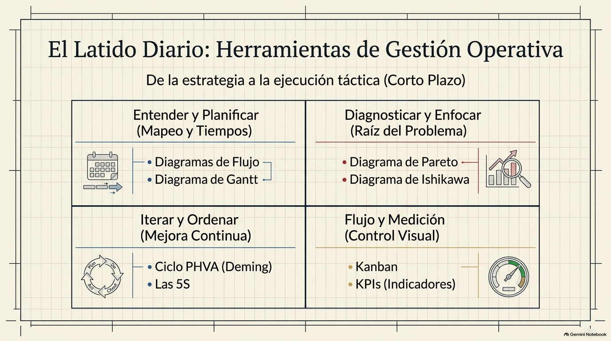
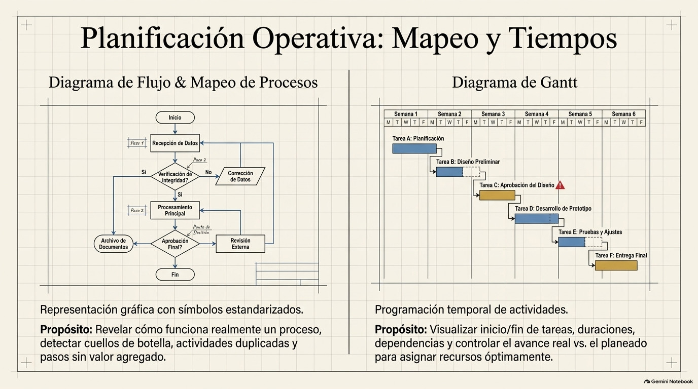
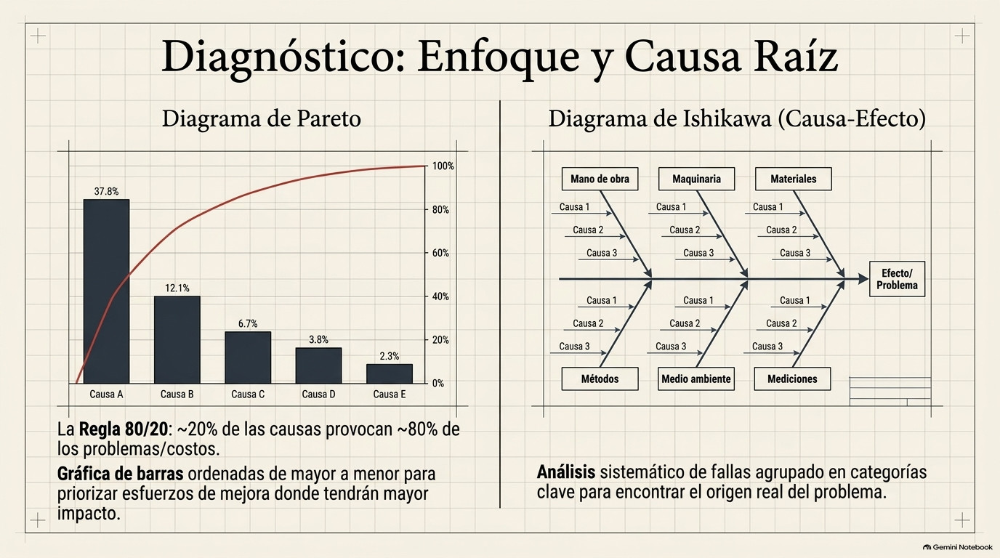
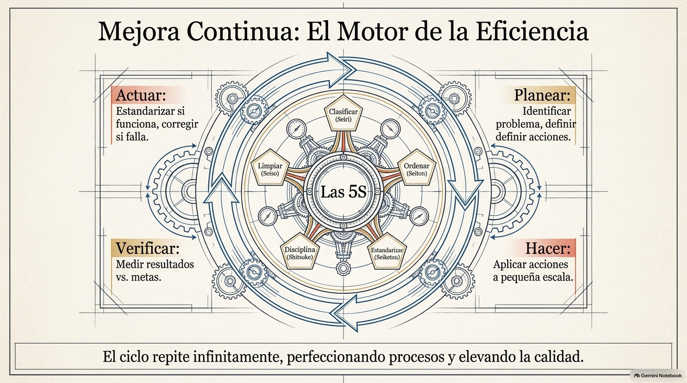
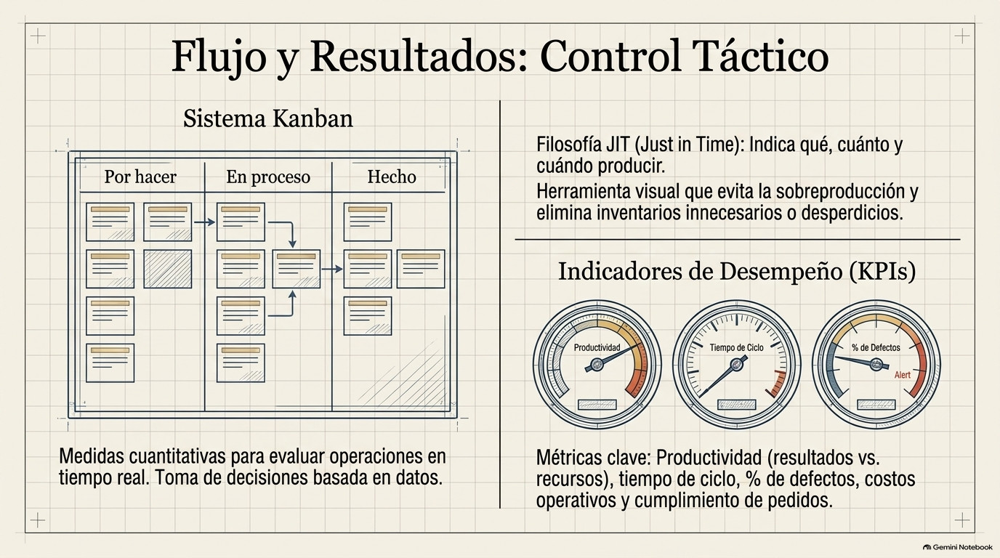
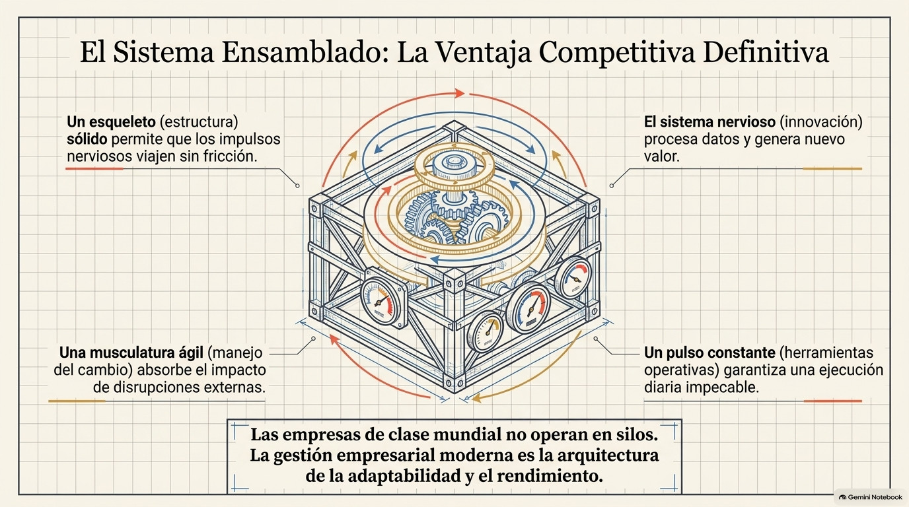

Unidad III · Tema 3.4
Herramientas de Gestión Operativa
El pulso táctico y las herramientas que mantienen la eficiencia y la mejora continua.
3.4.1¿Qué es la gestión operativa?
La gestión operativa es el conjunto de actividades que sirven para planear, coordinar, ejecutar y controlar las tareas del día a día con las que una empresa produce sus bienes o presta sus servicios, buscando hacerlo con la mayor eficiencia, calidad y rapidez posibles. A diferencia de la gestión estratégica, que define el rumbo de la empresa a largo plazo, la operativa se enfoca en el corto plazo y en la ejecución diaria de los procesos, cuidando que los recursos se usen bien para cumplir las metas. Para lograrlo, las empresas se apoyan en varias herramientas que ayudan a planear, dar seguimiento y mejorar sus operaciones.

3.4.2Diagrama de flujo y mapeo de procesos
El diagrama de flujo es una representación gráfica de los pasos de un proceso, donde se usan símbolos estandarizados para mostrar las actividades, decisiones, entradas y salidas. Con esta herramienta se puede entender cómo funciona realmente un proceso, detectar actividades duplicadas, cuellos de botella o pasos que no aportan valor, y tener una base para rediseñarlo y mejorarlo. El mapeo de procesos la complementa, porque da una visión más amplia de cómo se relacionan los distintos procesos de la empresa, quién es responsable de cada etapa y dónde se conectan las áreas.
3.4.3Diagrama de Gantt
El diagrama de Gantt es una herramienta de programación que muestra en un cuadro las actividades de un proyecto o proceso a lo largo del tiempo: cuándo empieza y termina cada tarea, cuánto dura y de cuáles otras depende. Sirve para ver el avance real contra lo planeado, asignar bien los recursos y anticipar retrasos que puedan afectar los plazos. Por eso se usa mucho en la planeación y el seguimiento de proyectos y programas de producción.

3.4.4Diagrama de Pareto y diagrama de causa y efecto
El diagrama de Pareto parte de la idea de que, en muchas situaciones, un grupo pequeño de causas (más o menos el 20%) provoca la mayor parte de los problemas (cerca del 80%). Con una gráfica de barras ordenadas de mayor a menor, ayuda a identificar cuáles son los problemas más frecuentes o más costosos para enfocar ahí los esfuerzos de mejora.
El diagrama de causa y efecto, también conocido como diagrama de Ishikawa o espina de pescado, sirve para analizar de forma sistemática las posibles causas de un problema, agrupándolas normalmente en categorías como mano de obra, maquinaria, materiales, métodos, medio ambiente y mediciones. Así es más fácil encontrar de dónde viene realmente la falla y proponer soluciones adecuadas.

3.4.5Ciclo PHVA o ciclo de Deming
El ciclo PHVA, o ciclo de Deming, es una herramienta de mejora continua con cuatro etapas. En planear se identifican los problemas y se definen los objetivos y las acciones para resolverlos. En hacer se aplican esas acciones, normalmente a pequeña escala. En verificar se miden y analizan los resultados para compararlos con lo esperado. Y en actuar se estandarizan las mejoras que funcionaron o se corrigen las que no. Si se repite una y otra vez, el ciclo permite que la empresa vaya perfeccionando sus procesos y subiendo su nivel de calidad.

3.4.6Las 5S, Kanban y control estadístico
La metodología de las 5S busca tener lugares de trabajo ordenados, limpios y seguros mediante cinco prácticas de origen japonés: clasificar, ordenar, limpiar, estandarizar y mantener la disciplina. Con esto mejora la productividad y se reducen los desperdicios y los accidentes.
El sistema Kanban es una herramienta visual para controlar la producción y el flujo de trabajo, que usa tarjetas o señales para indicar qué se debe producir, cuánto y cuándo, evitando así la sobreproducción y los inventarios innecesarios. Por último, el control estadístico de procesos usa gráficos de control y otras técnicas estadísticas para vigilar la variabilidad de los procesos y detectar a tiempo las desviaciones que puedan afectar la calidad del producto o servicio.
3.4.7Indicadores de desempeño operativo
Los indicadores de desempeño operativo, conocidos comúnmente como KPI, son medidas cuantitativas que sirven para evaluar qué tan bien se están realizando las operaciones de la empresa. Entre los más usados están la productividad, que relaciona los resultados con los recursos empleados; el tiempo de ciclo o de entrega; el porcentaje de productos defectuosos; los costos de operación; y el nivel de cumplimiento de los pedidos. Estos indicadores ayudan a tomar decisiones con base en datos, comparar los resultados con las metas y saber qué acciones correctivas hacen falta para mantener la operación dentro de lo esperado.


Genially · Herramientas de Gestión Operativa
Comprueba tu comprensión
Verifica tu dominio sobre las herramientas de gestión operativa con la actividad interactiva.